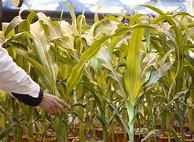
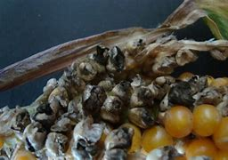
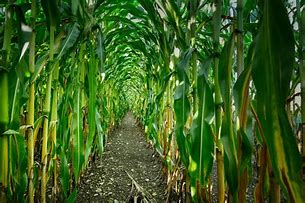

Mahindi ni chakula muhimu na ni aina ya nafaka katika mataifa ya Afrika yaliyomo kusini mwa jangwa la Sahara. Ni chakula cha matumizi ya nyumbani kwa idadi ya watu inayokadiriwa kuwa asilimia 50. Ni chanzo muhimu cha madini na kuongeza nguvu mwilini, protini, madini ya chuma (iron) vitamini na madini mengine asilia.Waafrika hutumia mahindi kwa njia mbalimbali (uji, ugali na pombe). Na mahindi ya kuchoma. Kila sehemu ya mmea wa mahindi ina thamani kiuchumi : punje, majani, shina na magunzi huweza kutoa kiasi kikubwa cha bidhaa nyinginezo zilizo chakula na zisizokuwa chakula. Vile vile mahindi ni chakula muhimu cha mifugo (ng’ombe) na huhifadiwa kama silage. Pia mabaki ya mimea na nafaka na pia hutumika viwandani kutengeneza wanga na mafuta. Mahitaji ya mahindi katika hali ya hewa, udongo na Mahindi ni mimea ambayo hustahimili mabadiliko mengi ya hali ya hewa na humea katika maeneo mengi tofauti. Kuna aina nyingi za mahindi yanayotofautiana katika muda wa kukomaa, mahindi huwa na ustahimili mkubwa kwa mabadiliko katika kiwango cha joto. Mahindi haswa huwa mimea ya maeneo ya joto ambako unyevu ni wa kutosha.
HALI YA HEWA
Mmea huu unahitaji kiwango cha joto cha kila siku cha nyuzi joto 20º ili umee vyema. Joto la juu sana kwa mazao mazuri ni kama nyuzi joto 30º. Hupandwa sana katika sehemu zilizo katika kimo cha mita 3000 kutoka bahari hadi kwenye ukanda wa pwani. mahindi yaweza kupandwa kama chakula cha mifugo. Hustawi vizuri katika udongo wenye uchachu wa soil pH 6-6.5. Na pia Hustawi zaidi kwenye maeneo yenye mwinuko wa 2500m. Mahindi huwa yanaathirika na ukosefu wa unyevu wakati wa kutoa maua na matunda. Pia yanahitaji maji ya kutosha wakati wa kupanda. Katika nchi za joto jingi (tropiki), mahindi hufanya vyema katika mvua ya kiwango cha milimita 600 hadi 900 wakati wa kukua. Mahindi yanaweza kukuzwa kwenye aina nyingi za udongo lakini hukua vyema zaidi katika mchanga, usiotuamisha maji mengi, ulio na hewa ya kutosha na ulio na rutuba na madini ya kutosha. Kuwepo kwa mazao mengi ya mahindi kunapelekea kunyonywa sana kwa madini kwenye udongo. Mahindi yako katika kikundi cha mimea kinachoaminika kuathirika na hali ya chumvi katika maji na udongo. Kwa vile mimea ambayo ni michanga huwacha sehemu kubwa bila kuzingirwa na ardhi, mmomonyko wa udongo na kupoteza maji hutokea sana sana hivyo basi ni bora umakini uzingatiwe katika uhifadhi wa udongo na maji kwa kuweka matandazo (mulching)
Tayarisha shamba la mahindi mara tu baada ya kuvuna mazao ya msimu uliopita.
Mahindi hustawi sehemu yenye udongo wenye rutuba na usiosimamisha maji.
Moto usitumike wakati wa kuandaa shamba
AINA ZA MBEGU
Mbegu aina ya chotara(hybrid)
Aina ya ndugu moja(synthetic)
Aina ya ndugu moja(synthetic)
Mbegu za kisasa zikitumiwa vizuri katika misingi ya kilimo zina uwezo wa kuzaa magunia 50-80 au tani 5.5 – 7.5 kwa hekta moja. NAFASI ZA KUPANDA Hiyo ni baina ya mstari na mstari na mche kwa mche. 75cm x 30cm mfano:- mstari kwa mstari 75cm na mche kwa mche 30cm
75cm x 60cm
90cm x 25cm
90cm x 50cm
MAGONJWA
1. Doa jani la kijivu la mahindi (Cercospora zeae-maydis & Cercospora zeina) Doa jani la kijivu la mahindi umeibuka kama ugonjwa ulioweka kikwazo kwa mazao ya mahindi nchini Marekani na kusini mwa Afrika katika miaka 25 iliyopita. Ingawa ulidhaniwa kuwa aina moja ya kuvu, Cercospora zeae-maydis, ukaguzi wa chembechembe umeonyesha kuwa kuvu lingine, C. zeina, hupatikana kwa wingi mashariki mwa Marekani na kusini mwa Afrika. Mbegu za kuvu, zinazoishi katika mabaki ya mazao ya awali, hurushwa na matone ya mvua kwenye majani ya chini ya mmea na kusababisha madoa marefu yanayoungana kwenye mimea isiyohimili na kusababisha baka. Mashina hudhoofika na kuanguka wakati wa mikurupuko ya magonjwa. Ugonjwa unaweza kusimamiwa kwa kuharibu mabaki ya mimea baada ya kuvuna, kilimo cha mzunguko, kwa kutumia aina zinazovumilia ugonjwa zaidi, na, matumizi ya dawa za kuua kuvu ikiwa zitaleta faida kiuchumi
2. Muozo wa mahindi na mycotoxin (Fusarium and Aspergillus species) Kuna aina nyingi za kuvu zinazotokea kwenye mahindi na kuzalisha sumu za kikemikali ambazo huchafua chakula na lishe. Zinajulikana kwa pamoja kama mycotoxins, na sumu hizi zina madhara makubwa kwa afya ya binadamu na wanyama. Aspergillus inasemekana kuwa mzalishaji muhimu zaidi wa mycotoxin katika Afrika, ingawa kuvu nyingine kama vile Fusarium pia inahusika. Makundi yote mawili ya kuvu hukua kwenye sehemu za mimea zilizokufa na zinazooza na kusababisha kuoza kwa mahindi katika shamba. Huzalisha unga mwingi wenye mbegu za kuvu juu ya mahindi, kabla na baada ya kuvuna, lakini pia inaweza kuwa bila kuzalisha koga lolote. Muozo wa mahindi unaosababishwa na kuvu zinazozalisha mycotoxin hutokea kwa wingi zaidi wakati mahindi yana matatizo na yanakua vibaya. Udhibiti bora zaidi wa kuvu hizi huchanganya kuvuna kwa wakati muafaka na kukausha mahindi kabla ya kuyahifadhi. Aflasafe™, njia mpya ya kibiolojia ya kudhibiti Aspergillus, inatumika katika mashamba kabla ya mahindi kutoa maua na imeonyesha matumaini makubwa katika kupunguza uchafuzi wa mahindi kabla ya kuvuna na baadaye mkusanyiko wa mycotoxins katika bidhaa zilizohifadhiwa.
3. Ugonjwa wa maize lethal necrosis (Multiple virus infections) Maize lethal necrosis disease (MLND) ni ugonjwa mpya wa virusi barani Afrika. Umesababisha wasiwasi mkubwa kwa sababu mimea hufa na hakuna nafaka au ni nafaka kidogo tu zinazozaliwa. Chanzo cha ugonjwa Wataalamu katika tafiti zao wanasema kuwa, ugonjwa huu husababishwa na virusi vya aina mbili vinavyoathiri mmea wa mahindi kwa pamoja ambavyo ni Maize Chlorotic Mottle Virus (MCMV) na Sugarcane Mosaic Virus (SCMV). Virusi hivi husambazwa na wadudu wa aina mbili, ambao ni Thrips pamoja na Aphids, japo kuna wadudu wengine wanaweza kubeba na kusambaza ugonjwa huo kama vile beetles and leafhoppers pamoja na matumizi ya mbegu zilizoathirika.
3. Ugonjwa wa maize lethal necrosis (Multiple virus infections) Maize lethal necrosis disease (MLND) ni ugonjwa mpya wa virusi barani Afrika. Umesababisha wasiwasi mkubwa kwa sababu mimea hufa na hakuna nafaka au ni nafaka kidogo tu zinazozaliwa. Chanzo cha ugonjwa Wataalamu katika tafiti zao wanasema kuwa, ugonjwa huu husababishwa na virusi vya aina mbili vinavyoathiri mmea wa mahindi kwa pamoja ambavyo ni Maize Chlorotic Mottle Virus (MCMV) na Sugarcane Mosaic Virus (SCMV). Virusi hivi husambazwa na wadudu wa aina mbili, ambao ni Thrips pamoja na Aphids, japo kuna wadudu wengine wanaweza kubeba na kusambaza ugonjwa huo kama vile beetles and leafhoppers pamoja na matumizi ya mbegu zilizoathirika.
UDHIBITI WA MAGONJWA YA”SMUT”
1. Tumia mbegu bora ingawa mpaka sasa haipo mbegu maalumu yenye kustahimili ugonjwa huu. Kwa kutumia mbegu bora, mkulima utajihakikishia mavuno bora. 2. Daima hakikisha unalima kilimo cha kisasa kikijumuisha urutubishaji wa udongo. Epuka kuijeruhi mimea uwapo shambani. Mimea iliyo na majeraha hushambuliwa kwa urahisi na ugonjwa huu. Pia dhibiti wadudu waharibifu ambao pamoja na madhara mengine wanayosababisha pia huijeruhi mimea na kwa hivyo kurahisisha maambukizo ya ugonjwa huu wa “smut”. 3. Kila inapowezekana tumia kilimo cha kubadilisha mazao. Katika kubadilisha mazao ni vema kutumia mzunguko wa mazao yasiyoshambuliwa na ugonjwa wa “smut” kama vile ngano, shayiri, njegere, viazi na maharagwe. 4. Unapolima hakikisha masalia mabua yamefukiwa chini sana. 